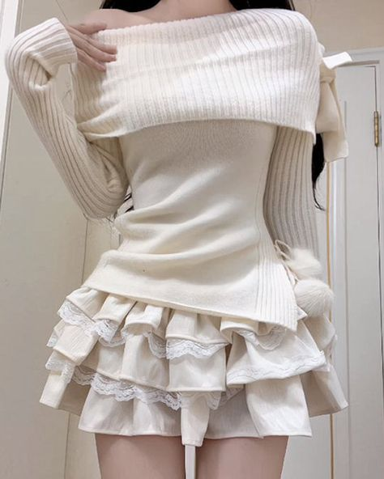
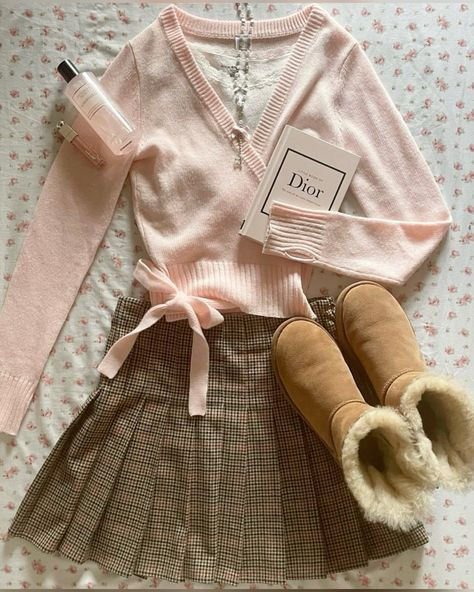
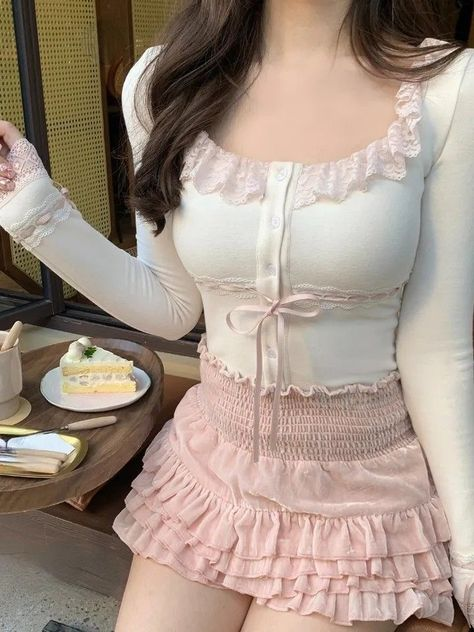

Bienvenue!Vous êtes coquette!Ici vous retrouverez différentes inspiration alors bonne découverte.
  Le style coquette incarne la finesse, la douceur et l’élégance intemporelle. Inspiré des looks romantiques et féminins, il se caractérise par des pièces raffinées aux détails délicats : dentelle, volants, noeuds et tissus fluides. Le style coquette joue sur une palette de couleurs claires et pastel comme le rose poudré, le blanc, le beige ou encore des nuances de crème. C’est l’allié idéal pour celles qui souhaitent allier charme et subtilité.
Si vous souhaitez adopter le style coquette, voici quelques enseignes où vous trouverez votre bonheur :
Le style coquette est parfait pour celles qui aiment mêler douceur et sophistication. Adoptez-le pour une allure gracieuse et raffinée en toutes circonstances !
Prête à craquer pour le style coquette ? Découvrez nos sélections et nos astuces pour l’adopter au quotidien !